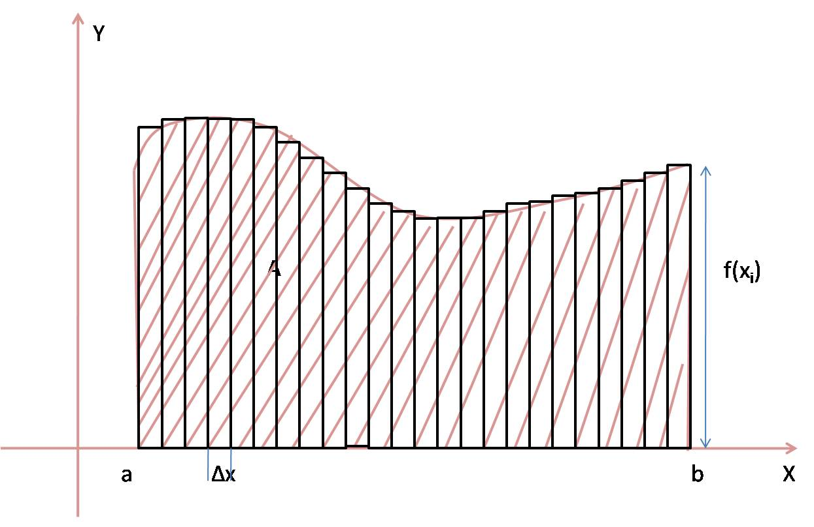

La integral definida se obtiene mediante el límite de una Suma de Riemann, la cual consiste en partir el intervalo en
sub-intervalos de ancho
.
Entonces, se procede a aproximar el área de cada rectángulo de la partición:
.
El punto puede ser cualquier punto en cada sub-intervalo, ya que cuando se tome el límite no importará cual se escoja [3].

La suma de todos los elementos de área nos dará una aproximación al área bajo la curva:
Y finalmente, tomando el límite cuando el ancho de los subintervalos se hace infinitesimalmente pequeño, el valor coincide con la integral definida